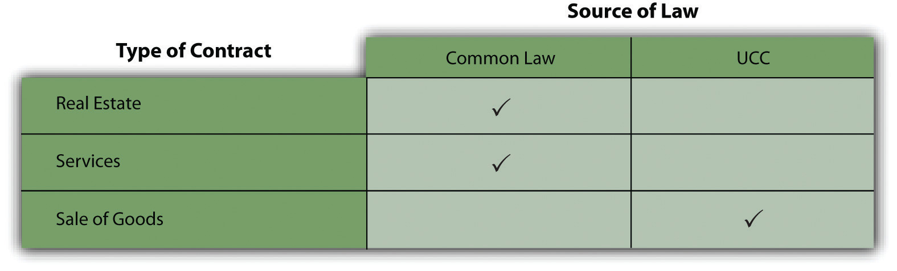

After reading this chapter, you should understand the following:
Contract is probably the most familiar legal concept in our society because it is so central to the essence of our political, economic, and social life. In common parlance, contract is used interchangeably with agreement, bargain, undertaking, or deal. Whatever the word, the concept it embodies is our notion of freedom to pursue our own lives together with others. Contract is central because it is the means by which a free society orders what would otherwise be a jostling, frenetic anarchy.
So commonplace is the concept of contract—and our freedom to make contracts with each other—that it is difficult to imagine a time when contracts were rare, when people’s everyday associations with one another were not freely determined. Yet in historical terms, it was not so long ago that contracts were rare, entered into if at all by very few: that affairs should be ordered based on mutual assent was mostly unknown. In primitive societies and in feudal Europe, relationships among people were largely fixed; traditions spelled out duties that each person owed to family, tribe, or manor. People were born into an ascribed position—a status (not unlike the caste system still existing in India)—and social mobility was limited. Sir Henry Maine, a nineteenth-century British historian, wrote that “the movement of the progressive societies has…been a movement from status to contract.”Sir Henry Maine, Ancient Law (1869), 180–82. This movement was not accidental—it developed with the emerging industrial order. From the fifteenth to the nineteenth century, England evolved into a booming mercantile economy, with flourishing trade, growing cities, an expanding monetary system, the commercialization of agriculture, and mushrooming manufacturing. With this evolution, contract law was created of necessity.
Contract law did not develop according to a conscious plan, however. It was a response to changing conditions, and the judges who created it frequently resisted, preferring the imagined quieter pastoral life of their forefathers. Not until the nineteenth century, in both the United States and England, did a full-fledged law of contracts arise together with, and help create, modern capitalism.
Modern capitalism, indeed, would not be possible without contract law. So it is that in planned economies, like those of the former Soviet Union and precapitalistic China, the contract did not determine the nature of an economic transaction. That transaction was first set forth by the state’s planning authorities; only thereafter were the predetermined provisions set down in a written contract. Modern capitalism has demanded new contract regimes in Russia and China; the latter adopted its Revised Contract Law in 1999.
Contract law may be viewed economically as well as culturally. In An Economic Analysis of Law, Judge Richard A. Posner (a former University of Chicago law professor) suggests that contract law performs three significant economic functions. First, it helps maintain incentives for individuals to exchange goods and services efficiently. Second, it reduces the costs of economic transactions because its very existence means that the parties need not go to the trouble of negotiating a variety of rules and terms already spelled out. Third, the law of contracts alerts the parties to troubles that have arisen in the past, thus making it easier to plan the transactions more intelligently and avoid potential pitfalls.Richard A. Posner, Economic Analysis of Law (New York: Aspen, 1973).
As usual in the law, the legal definition of contractA legally enforceable set of promises. is formalistic. The Restatement (Second) of Contracts (Section 1) says, “A contract is a promise or a set of promises for the breach of which the law gives a remedy, or the performance of which the law in some way recognizes as a duty.” Similarly, the Uniform Commercial Code says, “‘Contract’ means the total legal obligation which results from the parties’ agreement as affected by this Act and any other applicable rules of law.”Uniform Commercial Code, Section 1-201(11). As operational definitions, these two are circular; in effect, a contract is defined as an agreement that the law will hold the parties to.
Most simply, a contract is a legally enforceable promise. This implies that not every promise or agreement creates a binding contract; if every promise did, the simple definition set out in the preceding sentence would read, “A contract is a promise.” But—again—a contract is not simply a promise: it is a legally enforceable promise. The law takes into account the way in which contracts are made, by whom they are made, and for what purposes they are made. For example, in many states, a wager is unenforceable, even though both parties “shake” on the bet. We will explore these issues in the chapters to come.
Although contract law has many wrinkles and nuances, it consists of four principal inquiries, each of which will be taken up in subsequent chapters:
Did the parties create a valid contract? Four elements are necessary for a valid contract:
Together, the answers to these four basic inquiries determine the rights and obligations of contracting parties.
Contract law developed when the strictures of feudalism dissipated, when a person’s position in society came to be determined by personal choice (by mutual agreement) and not by status (by how a person was born). Capitalism and contract law have developed together, because having choices in society means that people decide and agree to do things with and to each other, and those agreements bind the parties; the agreements must be enforceable.
The most important sources of contract law are state case law and state statutes (though there are also many federal statutes governing how contracts are made by and with the federal government).
Law made by judges is called case lawLaw decided by judges as recorded in cases and published.. Because contract law was made up in the common-law courtroom by individual judges as they applied rules to resolve disputes before them, it grew over time to formidable proportions. By the early twentieth century, tens of thousands of contract disputes had been submitted to the courts for resolution, and the published opinions, if collected in one place, would have filled dozens of bookshelves. Clearly this mass of material was too unwieldy for efficient use. A similar problem also had developed in the other leading branches of the common law.
Disturbed by the profusion of cases and the resulting uncertainty of the law, a group of prominent American judges, lawyers, and law teachers founded the American Law Institute (ALI) in 1923 to attempt to clarify, simplify, and improve the law. One of the ALI’s first projects, and ultimately one of its most successful, was the drafting of the Restatement of the Law of ContractsAn organized codification of the common law of contracts., completed in 1932. A revision—the Restatement (Second) of Contracts—was undertaken in 1964 and completed in 1979. Hereafter, references to “the Restatement” pertain to the Restatement (Second) of Contracts.
The Restatements—others exist in the fields of torts, agency, conflicts of laws, judgments, property, restitution, security, and trusts—are detailed analyses of the decided cases in each field. These analyses are made with an eye to discerning the various principles that have emerged from the courts, and to the maximum extent possible, the Restatements declare the law as the courts have determined it to be. The Restatements, guided by a reporter (the director of the project) and a staff of legal scholars, go through several so-called tentative drafts—sometimes as many as fifteen or twenty—and are screened by various committees within the ALI before they are eventually published as final documents.
The Restatement (Second) of Contracts won prompt respect in the courts and has been cited in innumerable cases. The Restatements are not authoritative, in the sense that they are not actual judicial precedents; but they are nevertheless weighty interpretive texts, and judges frequently look to them for guidance. They are as close to “black letter” rules of law as exist anywhere in the American common-law legal system.
Common law, case law (the terms are synonymous), governs contracts for the sale of real estate and services. “Services” refer to acts or deeds (like plumbing, drafting documents, driving a car) as opposed to the sale of property.
Common-law contract principles govern contracts for real estate and services. Because of the historical development of the English legal system, contracts for the sale of goods came to be governed by a different body of legal rules. In its modern American manifestation, that body of rules is an important statute: the Uniform Commercial Code (UCC)The modern American state statutory law governing commercial transactions., especially Article 2That part of the Uniform Commercial Code dealing with the sale of goods., which deals with the sale of goods.
A bit of history is in order. Before the UCC was written, commercial law varied, sometimes greatly, from state to state. This first proved a nuisance and then a serious impediment to business as the American economy became nationwide during the twentieth century. Although there had been some uniform laws concerned with commercial deals—including the Uniform Sales Act, first published in 1906—few were widely adopted and none nationally. As a result, the law governing sales of goods, negotiable instruments, warehouse receipts, securities, and other matters crucial to doing business in an industrial market economy was a crazy quilt of untidy provisions that did not mesh well from state to state.
The UCC is a model law developed by the ALI and the National Conference of Commissioners on Uniform State Laws; it has been adopted in one form or another by the legislatures in all fifty states, the District of Columbia, and the American territories. It is a “national” law not enacted by Congress—it is not federal law but uniform state law.
Initial drafting of the UCC began in 1942 and was ten years in the making, involving the efforts of hundreds of practicing lawyers, law teachers, and judges. A final draft, promulgated by the ALI, was endorsed by the American Bar Association and published in 1951. Various revisions followed in different states, threatening the uniformity of the UCC. The ALI responded by creating a permanent editorial board to oversee future revisions. In one or another of its various revisions, the UCC has been adopted in whole or in part in all American jurisdictions. The UCC is now a basic law of relevance to every business and business lawyer in the United States, even though it is not entirely uniform because different states have adopted it at various stages of its evolution—an evolution that continues still.
The UCC consists of nine major substantive articles; each deals with separate though related subjects. The articles are as follows:
Article 2 deals only with the sale of goods, which the UCC defines as “all things…which are movable at the time of identification to the contract for sale other than the money in which the price is to be paid.”Uniform Commercial Code, Section 2-105. The only contracts and agreements covered by Article 2 are those relating to the present or future sale of goods.
Article 2 is divided in turn into six major parts: (1) Form, Formation, and Readjustment of Contract; (2) General Obligation and Construction of Contract; (3) Title, Creditors, and Good Faith Purchasers; (4) Performance; (5) Breach, Repudiation, and Excuse; and (6) Remedies.
Figure 8.1 Sources of Law
A Convention on Contracts for the International Sale of Goods (CISG)An international body of contract law. was approved in 1980 at a diplomatic conference in Vienna. (A convention is a preliminary agreement that serves as the basis for a formal treaty.) The CISG has been adopted by more than forty countries, including the United States.
The CISG is significant for three reasons. First, it is a uniform law governing the sale of goods—in effect, an international Uniform Commercial Code. The major goal of the drafters was to produce a uniform law acceptable to countries with different legal, social, and economic systems. Second, although provisions in the CISG are generally consistent with the UCC, there are significant differences. For instance, under the CISG, consideration (discussed in Chapter 11 "Consideration") is not required to form a contract, and there is no Statute of Frauds (a requirement that certain contracts be evidenced by a writing). Third, the CISG represents the first attempt by the US Senate to reform the private law of business through its treaty powers, for the CISG preempts the UCC. The CISG is not mandatory: parties to an international contract for the sale of goods may choose to have their agreement governed by different law, perhaps the UCC, or perhaps, say, Japanese contract law. The CISG does not apply to contracts for the sale of (1) ships or aircraft, (2) electricity, or (3) goods bought for personal, family, or household use, nor does it apply (4) where the party furnishing the goods does so only incidentally to the labor or services part of the contract.
Judges have made contract law over several centuries by deciding cases that create, extend, or change the developing rules affecting contract formation, performance, and enforcement. The rules from the cases have been abstracted and organized in the Restatements of Contracts. To facilitate interstate commerce, contract law for many commercial transactions—especially the sale of goods—not traditionally within the purview of judges has been developed by legal scholars and presented for the states to adopt as the Uniform Commercial Code. There is an analogous Convention on Contracts for the International Sale of Goods, to which the United States is a party.
Some contracts are written, some oral; some are explicit, some not. Because contracts can be formed, expressed, and enforced in a variety of ways, a taxonomy of contracts has developed that is useful in grouping together like legal consequences. In general, contracts are classified along four different dimensions: explicitness, mutuality, enforceability, and degree of completion. Explicitness is the degree to which the agreement is manifest to those not party to it. Mutuality takes into account whether promises are given by two parties or only one. Enforceability is the degree to which a given contract is binding. Completion considers whether the contract is yet to be performed or whether the obligations have been fully discharged by one or both parties. We will examine each of these concepts in turn.
An express contractA contract in words, orally or in writing. is one in which the terms are spelled out directly. The parties to an express contract, whether it is written or oral, are conscious that they are making an enforceable agreement. For example, an agreement to purchase your neighbor’s car for $5,500 and to take title next Monday is an express contract.
An implied contractA contract that is not expressed but is inferred from the actions of the parties. is one that is inferred from the actions of the parties. When parties have not discussed terms, an implied contract exists if it is clear from the conduct of both parties that they intended there be one. A delicatessen patron who asks for a turkey sandwich to go has made a contract and is obligated to pay when the sandwich is made. By ordering the food, the patron is implicitly agreeing to the price, whether posted or not.
The distinction between express and implied contracts has received a degree of notoriety in the so-called palimony cases, in which one member of an unmarried couple seeks a division of property after a long-standing live-together relationship has broken up. When a married couple divorces, their legal marriage contract is dissolved, and financial rights and obligations are spelled out in a huge body of domestic relations statutes and judicial decisions. No such laws exist for unmarried couples. However, about one-third of the states recognize common-law marriage, under which two people are deemed to be married if they live together with the intent to be married, regardless of their failure to have obtained a license or gone through a ceremony. Although there is no actual contract of marriage (no license), their behavior implies that the parties intended to be treated as if they were married.
A quasi-contract (implied in law)A contract imposed on a party when there was none, to avoid unjust enrichment. is—unlike both express and implied contracts, which embody an actual agreement of the parties—an obligation said to be “imposed by law” in order to avoid unjust enrichment of one person at the expense of another. A quasi-contract is not a contract at all; it is a fiction that the courts created to prevent injustice. Suppose, for example, that the local lumberyard mistakenly delivers a load of lumber to your house, where you are repairing your deck. It was a neighbor on the next block who ordered the lumber, but you are happy to accept the load for free; since you never talked to the lumberyard, you figure you need not pay the bill. Although it is true there is no contract, the law implies a contract for the value of the material: of course you will have to pay for what you got and took. The existence of this implied contract does not depend on the intention of the parties.
The typical contract is one in which the parties make mutual promises. Each is both promisor and promisee; that is, each pledges to do something, and each is the recipient of such a pledge. This type of contract is called a bilateral contractA contract in which each party makes a promise to the other..
Mutual promises are not necessary to constitute a contract. Unilateral contractsA contract that is accepted by performance of the requested action, not by a promise., in which one party performs an act in exchange for the other party’s promise, are equally valid. An offer of a reward—for catching a criminal or for returning a lost cat—is an example of a unilateral contract: there is an offer on one side, and the other side accepts by taking the action requested.
Figure 8.2 Bilateral and Unilateral Contracts

Not every agreement between two people is a binding contract. An agreement that is lacking one of the legal elements of a contract is said to be a void contractAn agreement that never was a contract.—that is, not a contract at all. An agreement that is illegal—for example, a promise to commit a crime in return for a money payment—is void. Neither party to a void “contract” may enforce it.
By contrast, a voidable contractA contract that is capable of being annulled. is one that may become unenforceable by one party but can be enforced by the other. For example, a minor (any person under eighteen, in most states) may “avoid” a contract with an adult; the adult may not enforce the contract against the minor if the minor refuses to carry out the bargain. But the adult has no choice if the minor wishes the contract to be performed. (A contract may be voidable by both parties if both are minors.)
Ordinarily, the parties to a voidable contract are entitled to be restored to their original condition. Suppose you agree to buy your seventeen-year-old neighbor’s car. He delivers it to you in exchange for your agreement to pay him next week. He has the legal right to terminate the deal and recover the car, in which case you will of course have no obligation to pay him. If you have already paid him, he still may legally demand a return to the status quo ante (previous state of affairs). You must return the car to him; he must return the cash to you.
A voidable contract remains a valid contract until it is voided. Thus a contract with a minor remains in force unless the minor decides he or she does not wish to be bound by it. When the minor reaches majority, he or she may “ratify” the contract—that is, agree to be bound by it—in which case the contract will no longer be voidable and will thereafter be fully enforceable.
An unenforceable contractA contract for which the nonbreaching party has no remedy for its breach. is one that some rule of law bars a court from enforcing. For example, Tom owes Pete money, but Pete has waited too long to collect it and the statute of limitations has run out. The contract for repayment is unenforceable and Pete is out of luck, unless Tom makes a new promise to pay or actually pays part of the debt. (However, if Pete is holding collateral as security for the debt, he is entitled to keep it; not all rights are extinguished because a contract is unenforceable.) A debt becomes unenforceable, too, when the debtor declares bankruptcy.
A bit more on enforceability is in order. A promise or what seems to be a promise is usually enforceable only if it is otherwise embedded in the elements necessary to make that promise a contract. Those elements are mutual assent, real assent, consideration, capacity, and legality. Sometimes, though, people say things that seem like promises, and on which another person relies. In the early twentieth century, courts began, in some circumstances, to recognize that insisting on the existence of the traditional elements of contract to determine whether a promise is enforceable could work an injustice where there has been reliance. Thus developed the equitable doctrine of promissory estoppelTo be prohibited from denying a promise when another subsequently has relied on it., which has become an important adjunct to contract law. The Restatement (Section 90) puts it this way: “A promise which the promisor should reasonably expect to induce action or forbearance on the party of the promisee or a third person and which does induce such action or forbearance is binding if injustice can be avoided only by enforcement of the promise. The remedy granted for breach may be limited as justice requires.”
To be “estopped” means to be prohibited from denying now the validity of a promise you made before.
The doctrine has an interesting background. In 1937, High Trees House Ltd. (a British corporation) leased a block of London apartments from Central London Properties. As World War II approached, vacancy rates soared because people left the city. In 1940 the parties agreed to reduce the rent rates by half, but no term was set for how long the reduction would last. By mid-1945, as the war was ending, occupancy was again full, and Central London sued for the full rental rates from June on. The English court, under Judge Alfred Thompson Denning (1899–1999), had no difficulty finding that High Trees owed the full amount once full occupancy was again achieved, but Judge Denning went on. In an aside (called a dicta—a statement “by the way”—that is, not necessary as part of the decision), he mused about what would have happened if in 1945 Central London had sued for the full-occupancy rate back to 1940. Technically, the 1940 amendment to the 1937 contract was not binding on Central London—it lacked consideration—and Central London could have reached back to demand full-rate payment. But Judge Denning said that High Trees would certainly have relied on Central London’s promise that a reduced-rate rent would be acceptable, and that would have been enough to bind it, to prevent it from acting inconsistently with the promise. He wrote, “The courts have not gone so far as to give a cause of action in damages for the breach of such a promise, but they have refused to allow the party making it to act inconsistently with it.”Central London Property Trust Ltd. v. High Trees House Ltd. (1947) KB 130.
In the years since, though, courts have gone so far as to give a cause of action in damages for various noncontract promises. Contract protects agreements; promissory estoppel protects reliance, and that’s a significant difference. The law of contracts continues to evolve.
An agreement consisting of a set of promises is called an executory contractA contract that has yet to be completed. before any promises are carried out. Most executory contracts are enforceable. If John makes an agreement to deliver wheat to Humphrey and does so, the contract is called a partially executed contractA contract in which one party has performed, or partly performed, and the other party has not.: one side has performed, the other has not. When John pays for the wheat, the contract is fully performed. A contract that has been carried out fully by both parties is called an executed contractA contract that has been completed..
Although not really part of the taxonomy of contracts (i.e., the orderly classification of the subject), an aspect of contractual—indeed, legal—terminology should be highlighted here. Suffixes (the end syllables of words) in the English language are used to express relationships between parties in legal terminology. Here are examples:
Contracts are described and thus defined on the basis of four criteria: explicitness (express, implied, or quasi-contracts), mutuality (bilateral or unilateral), enforceability (void, voidable, unenforceable), and degree of completion (executory, partially executed, executed). Legal terminology in English often describes relationships between parties by the use of suffixes, to which the eye and ear must pay attention.
Roger’s Backhoe Service, Inc. v. Nichols
681 N.W.2d 647 (Iowa 2004)
Carter, J.
Defendant, Jeffrey S. Nichols, is a funeral director in Muscatine.…In early 1998 Nichols decided to build a crematorium on the tract of land on which his funeral home was located. In working with the Small Business Administration, he was required to provide drawings and specifications and obtain estimates for the project. Nichols hired an architect who prepared plans and submitted them to the City of Muscatine for approval. These plans provided that the surface water from the parking lot would drain onto the adjacent street and alley and ultimately enter city storm sewers. These plans were approved by the city.
Nichols contracted with Roger’s [Backhoe Service, Inc.] for the demolition of the foundation of a building that had been razed to provide room for the crematorium and removal of the concrete driveway and sidewalk adjacent to that foundation. Roger’s completed that work and was paid in full.
After construction began, city officials came to the jobsite and informed Roger’s that the proposed drainage of surface water onto the street and alley was unsatisfactory. The city required that an effort be made to drain the surface water into a subterranean creek, which served as part of the city’s storm sewer system. City officials indicated that this subterranean sewer system was about fourteen feet below the surface of the ground.…Roger’s conveyed the city’s mandate to Nichols when he visited the jobsite that same day.
It was Nichols’ testimony at trial that, upon receiving this information, he advised…Roger’s that he was refusing permission to engage in the exploratory excavation that the city required. Nevertheless, it appears without dispute that for the next three days Roger’s did engage in digging down to the subterranean sewer system, which was located approximately twenty feet below the surface. When the underground creek was located, city officials examined the brick walls in which it was encased and determined that it was not feasible to penetrate those walls in order to connect the surface water drainage with the underground creek. As a result of that conclusion, the city reversed its position and once again gave permission to drain the surface water onto the adjacent street and alley.
[T]he invoices at issue in this litigation relate to charges that Roger’s submitted to Nichols for the three days of excavation necessary to locate the underground sewer system and the cost for labor and materials necessary to refill the excavation with compactable materials and attain compaction by means of a tamping process.…The district court found that the charges submitted on the…invoices were fair and reasonable and that they had been performed for Nichols’ benefit and with his tacit approval.…
The court of appeals…concluded that a necessary element in establishing an implied-in-fact contract is that the services performed be beneficial to the alleged obligor. It concluded that Roger’s had failed to show that its services benefited Nichols.…
In describing the elements of an action on an implied contract, the court of appeals stated in [Citation], that the party seeking recovery must show:
(1) the services were carried out under such circumstances as to give the recipient reason to understand:
(a) they were performed for him and not some other person, and
(b) they were not rendered gratuitously, but with the expectation of compensation from the recipient; and
(2) the services were beneficial to the recipient.
In applying the italicized language in [Citation] to the present controversy, it was the conclusion of the court of appeals that Roger’s’ services conferred no benefit on Nichols. We disagree. There was substantial evidence in the record to support a finding that, unless and until an effort was made to locate the subterranean sewer system, the city refused to allow the project to proceed. Consequently, it was necessary to the successful completion of the project that the effort be made. The fact that examination of the brick wall surrounding the underground creek indicated that it was unfeasible to use that source of drainage does not alter the fact that the project was stalemated until drainage into the underground creek was fully explored and rejected. The district court properly concluded that Roger’s’ services conferred a benefit on Nichols.…
Decision of court of appeals vacated; district court judgment affirmed.
SouthTrust Bank v. Williams
775 So.2d 184 (Ala. 2000)
Cook, J.
SouthTrust Bank (“SouthTrust”) appeals from an order denying its motion to compel arbitration of an action against it by checking-account customers Mark Williams and Bessie Daniels. We reverse and remand.
Daniels and Williams began their relationship with SouthTrust in 1981 and 1995, respectively, by executing checking-account “signature cards.” The signature card each customer signed contained a “change-in-terms” clause. Specifically, when Daniels signed her signature card, she “agree[d] to be subject to the Rules and Regulations as may now or hereafter be adopted by the Bank.” (Emphasis added.)…[Later,] SouthTrust added paragraph 33 to the regulations:…
ARBITRATION OF DISPUTES. You and we agree that the transactions in your account involve ‘commerce’ under the Federal Arbitration Act (‘FAA’). ANY CONTROVERSY OR CLAIM BETWEEN YOU AND US…WILL BE SETTLED BY BINDING ARBITRATION UNDER THE FAA.…
This action…challenges SouthTrust’s procedures for paying overdrafts, and alleges that SouthTrust engages in a “uniform practice of paying the largest check(s) before paying multiple smaller checks…[in order] to generate increased service charges for [SouthTrust] at the expense of [its customers].”
SouthTrust filed a “motion to stay [the] lawsuit and to compel arbitration.” It based its motion on paragraph 33 of the regulations. [T]he trial court…entered an order denying SouthTrust’s motion to compel arbitration. SouthTrust appeals.…
Williams and Daniels contend that SouthTrust’s amendment to the regulations, adding paragraph 33, was ineffective because, they say, they did not expressly assent to the amendment. In other words, they object to submitting their claims to arbitration because, they say, when they opened their accounts, neither the regulations nor any other relevant document contained an arbitration provision. They argue that “mere failure to object to the addition of a material term cannot be construed as an acceptance of it.”…They contend that SouthTrust could not unilaterally insert an arbitration clause in the regulations and make it binding on depositors like them.
SouthTrust, however, referring to its change-of-terms clause insists that it “notified” Daniels and Williams of the amendment in January 1997 by enclosing in each customer’s “account statement” a complete copy of the regulations, as amended. Although it is undisputed that Daniels and Williams never affirmatively assented to these amended regulations, SouthTrust contends that their assent was evidenced by their failure to close their accounts after they received notice of the amendments.…Thus, the disposition of this case turns on the legal effect of Williams and Daniels’s continued use of the accounts after the regulations were amended.
Williams and Daniels argue that “[i]n the context of contracts between merchants [under the UCC], a written confirmation of an acceptance may modify the contract unless it adds a material term, and arbitration clauses are material terms.”…
Williams and Daniels concede—as they must—…that Article 2 governs “transactions in goods,” and, consequently, that it is not applicable to the transactions in this case. Nevertheless, they argue:
It would be astonishing if a Court were to consider the addition of an arbitration clause a material alteration to a contract between merchants, who by definition are sophisticated in the trade to which the contract applies, but not hold that the addition of an arbitration clause is a material alteration pursuant to a change-of-terms clause in a contract between one sophisticated party, a bank, and an entire class of less sophisticated parties, its depositors.…
In response, SouthTrust states that “because of the ‘at-will’ nature of the relationship, banks by necessity must contractually reserve the right to amend their deposit agreements from time to time.” In so stating, SouthTrust has precisely identified the fundamental difference between the transactions here and those transactions governed by [Article 2].
Contracts for the purchase and sale of goods are essentially bilateral and executory in nature. See [Citation] “An agreement whereby one party promises to sell and the other promises to buy a thing at a later time…is a bilateral promise of sale or contract to sell”.…“[A] unilateral contract results from an exchange of a promise for an act; a bilateral contract results from an exchange of promises.”…Thus, “in a unilateral contract, there is no bargaining process or exchange of promises by parties as in a bilateral contract.” [Citation] “[O]nly one party makes an offer (or promise) which invites performance by another, and performance constitutes both acceptance of that offer and consideration.” Because “a ‘unilateral contract’ is one in which no promisor receives promise as consideration for his promise,” only one party is bound.…The difference is not one of semantics but of substance; it determines the rights and responsibilities of the parties, including the time and the conditions under which a cause of action accrues for a breach of the contract.
This case involves at-will, commercial relationships, based upon a series of unilateral transactions. Thus, it is more analogous to cases involving insurance policies, such as [Citations]. The common thread running through those cases was the amendment by one of the parties to a business relationship of a document underlying that relationship—without the express assent of the other party—to require the arbitration of disputes arising after the amendment.…
The parties in [the cited cases], like Williams and Daniels in this case, took no action that could be considered inconsistent with an assent to the arbitration provision. In each case, they continued the business relationship after the interposition of the arbitration provision. In doing so, they implicitly assented to the addition of the arbitration provision.…
Reversed and remanded.
Woolley v. Hoffmann-La Roche, Inc.
491 A.2d 1257 (N.J. 1985)
Wilntz, C. J.
Plaintiff, Richard Woolley, was hired by defendant, Hoffmann-La Roche, Inc., in October 1969, as an Engineering Section Head in defendant’s Central Engineering Department at Nutley. There was no written employment contract between plaintiff and defendant. Plaintiff began work in mid-November 1969. Sometime in December, plaintiff received and read the personnel manual on which his claims are based.
[The company’s personnel manual had eight pages;] five of the eight pages are devoted to “termination.” In addition to setting forth the purpose and policy of the termination section, it defines “the types of termination” as “layoff,” “discharge due to performance,” “discharge, disciplinary,” “retirement” and “resignation.” As one might expect, layoff is a termination caused by lack of work, retirement a termination caused by age, resignation a termination on the initiative of the employee, and discharge due to performance and discharge, disciplinary, are both terminations for cause. There is no category set forth for discharge without cause. The termination section includes “Guidelines for discharge due to performance,” consisting of a fairly detailed procedure to be used before an employee may be fired for cause. Preceding these definitions of the five categories of termination is a section on “Policy,” the first sentence of which provides: “It is the policy of Hoffmann-La Roche to retain to the extent consistent with company requirements, the services of all employees who perform their duties efficiently and effectively.”
In 1976, plaintiff was promoted, and in January 1977 he was promoted again, this latter time to Group Leader for the Civil Engineering, the Piping Design, the Plant Layout, and the Standards and Systems Sections. In March 1978, plaintiff was directed to write a report to his supervisors about piping problems in one of defendant’s buildings in Nutley. This report was written and submitted to plaintiff’s immediate supervisor on April 5, 1978. On May 3, 1978, stating that the General Manager of defendant’s Corporate Engineering Department had lost confidence in him, plaintiff’s supervisors requested his resignation. Following this, by letter dated May 22, 1978, plaintiff was formally asked for his resignation, to be effective July 15, 1978.
Plaintiff refused to resign. Two weeks later defendant again requested plaintiff’s resignation, and told him he would be fired if he did not resign. Plaintiff again declined, and he was fired in July.
Plaintiff filed a complaint alleging breach of contract.…The gist of plaintiff’s breach of contract claim is that the express and implied promises in defendant’s employment manual created a contract under which he could not be fired at will, but rather only for cause, and then only after the procedures outlined in the manual were followed. Plaintiff contends that he was not dismissed for good cause, and that his firing was a breach of contract.
Defendant’s motion for summary judgment was granted by the trial court, which held that the employment manual was not contractually binding on defendant, thus allowing defendant to terminate plaintiff’s employment at will. The Appellate Division affirmed. We granted certification.
The employer’s contention here is that the distribution of the manual was simply an expression of the company’s “philosophy” and therefore free of any possible contractual consequences. The former employee claims it could reasonably be read as an explicit statement of company policies intended to be followed by the company in the same manner as if they were expressed in an agreement signed by both employer and employees.…
This Court has long recognized the capacity of the common law to develop and adapt to current needs.…The interests of employees, employers, and the public lead to the conclusion that the common law of New Jersey should limit the right of an employer to fire an employee at will.
In order for an offer in the form of a promise to become enforceable, it must be accepted. Acceptance will depend on what the promisor bargained for: he may have bargained for a return promise that, if given, would result in a bilateral contract, both promises becoming enforceable. Or he may have bargained for some action or nonaction that, if given or withheld, would render his promise enforceable as a unilateral contract. In most of the cases involving an employer’s personnel policy manual, the document is prepared without any negotiations and is voluntarily distributed to the workforce by the employer. It seeks no return promise from the employees. It is reasonable to interpret it as seeking continued work from the employees, who, in most cases, are free to quit since they are almost always employees at will, not simply in the sense that the employer can fire them without cause, but in the sense that they can quit without breaching any obligation. Thus analyzed, the manual is an offer that seeks the formation of a unilateral contract—the employees’ bargained-for action needed to make the offer binding being their continued work when they have no obligation to continue.
The unilateral contract analysis is perfectly adequate for that employee who was aware of the manual and who continued to work intending that continuation to be the action in exchange for the employer’s promise; it is even more helpful in support of that conclusion if, but for the employer’s policy manual, the employee would have quit. See generally M. Petit, “Modern Unilateral Contracts,” 63 Boston Univ. Law Rev. 551 (1983) (judicial use of unilateral contract analysis in employment cases is widespread).
…All that this opinion requires of an employer is that it be fair. It would be unfair to allow an employer to distribute a policy manual that makes the workforce believe that certain promises have been made and then to allow the employer to renege on those promises. What is sought here is basic honesty: if the employer, for whatever reason, does not want the manual to be capable of being construed by the court as a binding contract, there are simple ways to attain that goal. All that need be done is the inclusion in a very prominent position of an appropriate statement that there is no promise of any kind by the employer contained in the manual; that regardless of what the manual says or provides, the employer promises nothing and remains free to change wages and all other working conditions without having to consult anyone and without anyone’s agreement; and that the employer continues to have the absolute power to fire anyone with or without good cause.
Reversed and remanded for trial.
Contract law developed as the status-centered organization of feudal society faded and people began to make choices about how they might order their lives. In the capitalistic system, people make choices about how to interact with others, and—necessarily—those choices expressed as promises must be binding and enforceable.
The two fundamental sources of contract law are (1) the common law as developed in the state courts and as summarized in the Restatement (Second) of Contracts and (2) the Uniform Commercial Code for the sale of goods. In general, the UCC is more liberal than the common law in upholding the existence of a contract.
Types of contracts can be distinguished by four criteria: (1) express and implied, including quasi-contracts implied by law; (2) bilateral and unilateral; (3) enforceable and unenforceable; and (4) completed (executed) and uncompleted (executory). To understand contract law, it is necessary to master these distinctions and their nuances.
James Mann owned a manufacturing plant that assembled cell phones. A CPA audit determined that several phones were missing. Theft by one or more of the workers was suspected. Accordingly, under Mann’s instructions, the following sign was placed in the employees’ cafeteria:
Reward. We are missing phones. I want all employees to watch for thievery. A reward of $500 will be paid for information given by any employee that leads to the apprehension of employee thieves.
—James Mann
Waldo, a plant employee, read the notice and immediately called Mann, stating, “I accept your offer. I promise to watch other employees and provide you with the requested information.” Has a contract been formed? Explain.
An implied contract
The Convention on Contracts for the International Sale of Goods is
An unenforceable contract is
Betty Baker found a bicycle apparently abandoned near her house. She took it home and spent $150 repairing and painting it, after which Carl appeared and proved his ownership of it. Under what theory is Betty able to get reimbursed for her expenditures?
Alice discusses with her neighbor Bob her plan to hire Woodsman to cut three trees on her side of their property line, mentioning that she can get a good deal because Woodsman is now between jobs. Bob says, “Oh, don’t do that. My brother is going to cut some trees on my side, and he can do yours too for free.” Alice agrees. But Bob’s brother is preoccupied and never does the job. Three weeks later Alice discovers Woodsman’s rates have risen prohibitively. Under what theory does Alice have a cause of action against Bob?